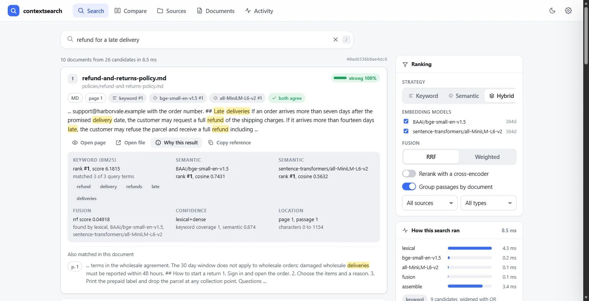
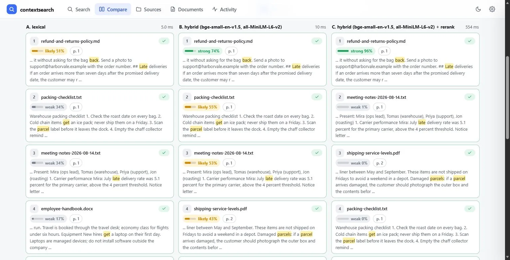
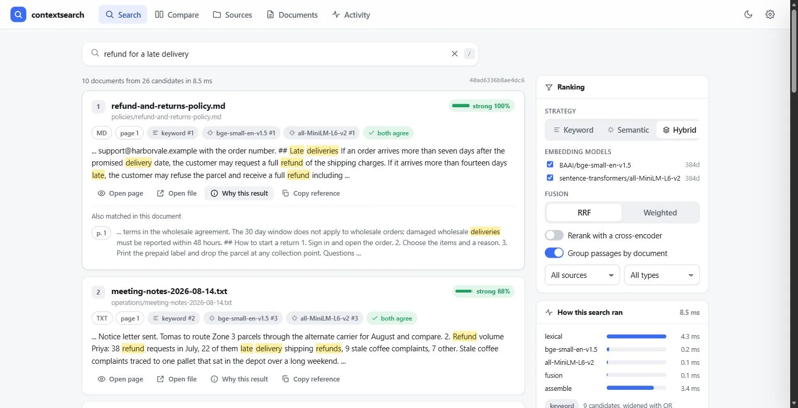
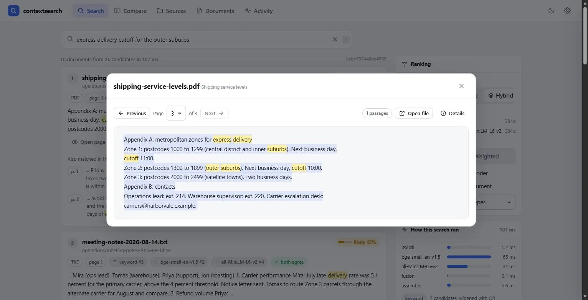
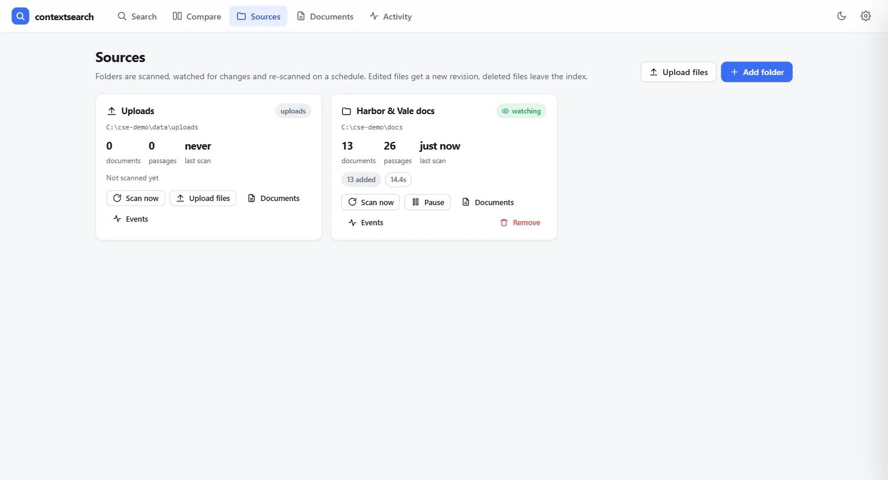
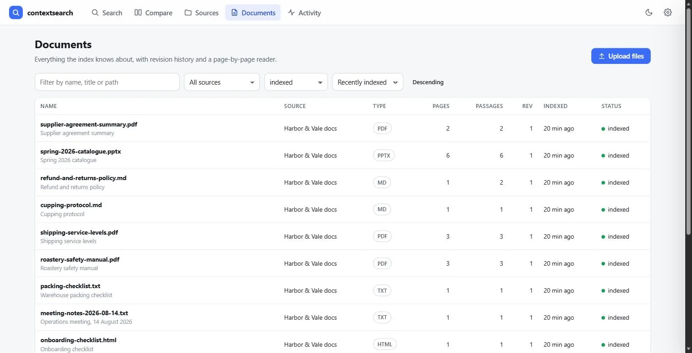
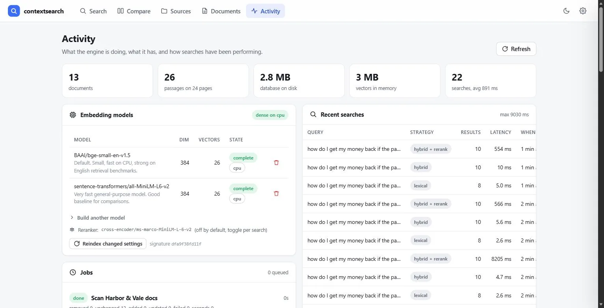
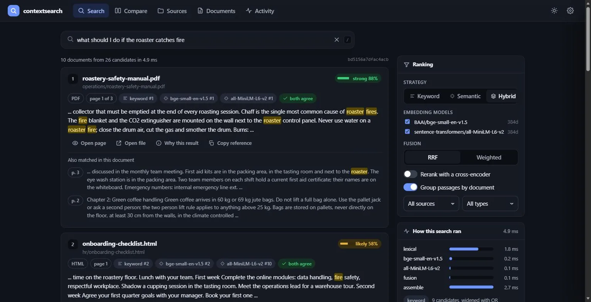
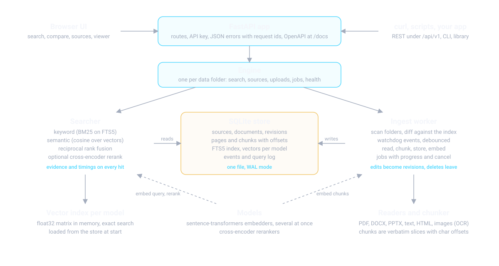

contextsearch
Project Overview
contextsearch is a self-hosted search engine for your own documents. Point it at a folder of PDFs, Word and PowerPoint files, text, Markdown or HTML, and it indexes them, watches them for changes and answers queries with the page, the exact passage and the reasons a result ranked where it did. It combines keyword search (BM25) with semantic search (embeddings), fuses the two, and can rerank the top candidates with a cross-encoder.

There is no language model rewriting anything. What you see is what retrieval found, and every number on the page can be traced back: the matched terms come from the FTS5 highlighter, the cosine from the embedding model, the fused score from reciprocal rank fusion, and the character span points into the stored page text so the viewer can open the page with the exact passage marked.
From Proof of Concept to Version 3
The first two versions of this project were a learning lab: upload a few files, embed them with DistilBERT, search with FAISS, tune chunk size and top-k from the UI. It did its job, which was to make the pipeline from document to embedding to nearest neighbour visible and tweakable.
It also had the problems a proof of concept has. DistilBERT with mean pooling was never trained to put similar sentences close together, so the vectors were weak for retrieval. The "relevance" percentage was 100 minus an L2 distance, which is not a meaningful number. The index lived in three files written separately, so a crash between writes corrupted it, and deleting one document re-embedded the whole corpus. Chunks were cut mid-sentence with no offsets, so a result could not be traced to a place in the source.
Version 3 is a rewrite around one question: what would it take for a team to run this on an internal server, trust the results and build on top of it? The answer turned out to be a real retrieval model plus keyword search, fusion instead of a single score, evidence on every hit, one transactional store, folder watching, and the operational pieces (auth, logs with request ids, metrics, jobs, a CLI, tests, a Docker image) that a service needs.
The Problem
Keyword search finds exact terms and nothing else: "refund" does not find "money back". Semantic search finds paraphrases but stumbles on part numbers, names and error codes, and it always returns something, even when nothing relevant exists. Most tools pick one and hide the score behind a single percentage nobody can check.
A search engine people rely on has to do both, say which one found a result, and let the user calibrate the trade-off on their own corpus with numbers rather than impressions. It also has to keep the index in step with the files: a policy that was revised last week must not come back in its old wording.
Key Features
Three strategies, one engine
Keyword (BM25 on SQLite FTS5), semantic (any sentence-transformers model, several side by side) and hybrid, fused with reciprocal rank fusion or a weighted blend.
Evidence on every result
Retriever ranks, matched and covered query terms, cosine per model, reranker score, a confidence label, the page and character span, stage timings and a request id.
Watched folders with revisions
New files are indexed within seconds, edited files get a new revision, deleted files leave the index. A periodic rescan covers network shares where events never arrive.
Cross-encoder reranking
A toggle in the UI and a flag in the API. The reranker reads query and passage together and its probability becomes the confidence, which is what pushes unrelated hits to zero.
Compare and measure
The Compare page runs one query under up to four configurations side by side, and contextsearch eval scores strategies on your own labelled queries with recall, MRR, nDCG and latency.
Built to be operated
One process, one SQLite file. REST API with OpenAPI docs, API key auth, JSON errors with request ids, jobs with progress, Prometheus metrics, JSON logs, a CLI with doctor, a Dockerfile and CI on Linux and Windows.
Screenshots
Comparing strategies on a paraphrase

Results grouped by document

The page viewer

Sources, documents and activity



Dark theme

How It Works
Architecture

Indexing a folder
- A scan walks the tree with
os.scandir, reading stats but no contents, so a rescan of a large tree with nothing new takes seconds. - Every file is compared with its stored row: unknown files are new; a changed size or mtime means the content is hashed, and only a changed hash triggers a re-index; a file that failed last time is retried; a missing file is marked removed and loses its chunks and vectors. A folder that cannot be listed never turns into a mass deletion.
- The reader for the extension produces pages of text (PDFium for PDF, python-docx and python-pptx for Office files, an HTML stripper, OCR through RapidOCR for images and scanned pages).
- The chunker packs sentence-like units up to about 200 words, prefers to end on a sentence and carries an overlap into the next chunk. Every chunk is a verbatim slice of its page with character offsets.
- Pages, chunks and the new document revision are written in one transaction; FTS5 triggers keep the keyword index in step. Then each embedding model encodes the chunks in batches and the vectors go to the store and to the live matrix.
- With
watchdogsubscribed, an edited file goes through the same path within a couple of seconds and becomes revision 2; a periodic rescan runs every five minutes anyway.
Answering a query
- The query is parsed for keyword search: quoted phrases stay phrases, other words become stemmed terms, common English words are dropped. FTS5 tries all terms with AND first and widens to OR if that returns too few candidates.
- Each embedding model encodes the query (cached for repeats) and scores every stored vector with a dot product. Exact search, no approximation, deterministic results.
- The candidate lists are fused with reciprocal rank fusion. It ignores raw scores on purpose: BM25 values and cosines live on different scales, and a chunk on both lists reliably rises to the top.
- Optionally a cross-encoder rescores the top 30 candidates. Its sigmoid output becomes the confidence.
- Chunks are grouped by document, snippets are cut around the densest cluster of matches with highlight offsets, and every hit gets a confidence and a label: strong, likely or weak.
Tech Stack
Retrieval
Documents
Service
Measured, Not Estimated
Numbers from a laptop CPU (i7-14650HX, no GPU): keyword search answers in single-digit milliseconds, a hybrid query with two embedding models in tens of milliseconds, and reranking 30 candidates with MiniLM-L6 in 150 to 400 ms. An exact dot product over a million 384-dimensional vectors takes 48 ms and 1.5 GB of memory. The slow part is the first index: embedding runs at 30 to 40 chunks per second on this CPU, so keyword search is available from the first minute and the dense index fills in behind it. All of this is in the repository's performance page with the benchmark that produced it.
Evaluation on the bundled examples
| Strategy | recall@10 | MRR@10 | nDCG@10 | Latency |
|---|---|---|---|---|
| lexical | 1.000 | 0.933 | 0.950 | 2.3 ms |
| dense | 1.000 | 0.950 | 0.963 | 42.3 ms |
| hybrid | 1.000 | 0.950 | 0.963 | 33.5 ms |
| hybrid + rerank | 1.000 | 1.000 | 1.000 | 197.1 ms |
Five documents and ten queries are easy for every strategy; the point is that the tool exists. A labels file
with twenty to fifty real queries from real users, scored with contextsearch eval, is how a team
decides between models, fusion methods and reranking on their own corpus instead of by impression.
Core Logic: How the Code Works
Fusing two ranked lists
Reciprocal rank fusion is a few lines. Each retriever contributes 1 / (k + rank) for every chunk
it returned, and the contributions are kept per retriever so the evidence panel can show them.
def rrf(results: list[RetrieverResult], k: int = 60) -> list[FusedCandidate]:
fused: dict[int, FusedCandidate] = {}
for result in results:
for hit in result.hits:
cand = fused.get(hit.chunk_id)
if cand is None:
cand = fused[hit.chunk_id] = FusedCandidate(hit.chunk_id, 0.0)
contribution = 1.0 / (k + hit.rank)
cand.score += contribution
cand.contributions[result.name] = contribution
cand.ranks[result.name] = hit.rank
cand.raw_scores[result.name] = hit.score
return sorted(fused.values(), key=lambda c: (-c.score, c.chunk_id))Deciding what a scan should do
The sync planner compares what is on disk with what is stored and sorts files into buckets. Hashing only happens for files whose size or mtime changed, and an unmounted share is never read as "everything was deleted".
def plan_sync(source, snapshot, scan, chunking_signature) -> SyncPlan:
plan = SyncPlan(scan=scan)
if scan.root_missing:
return plan # never treat an unmounted share as "everything was deleted"
seen = set()
for stat in scan.files:
seen.add(stat.path)
stored = snapshot.get(stat.path)
if stored is None:
plan.new.append(stat)
elif stored.status == "failed":
plan.retry.append(stat)
elif stored.chunking_signature != chunking_signature:
plan.changed.append(stat) # settings changed: re-cut
elif stored.size != stat.size or abs(stored.mtime - stat.mtime) > 1e-6:
plan.changed.append(stat) # hashed later; same hash means no re-index
else:
plan.unchanged += 1
for path, stored in snapshot.items():
if path not in seen and not path.startswith(tuple(scan.unreadable_dirs)):
plan.removed.append((path, stored))
return planTurning evidence into a confidence
With a reranker on, its probability is the confidence. Without one, keyword coverage (how many query terms the passage contains, stems included) and the best cosine similarity are blended, with a small bonus when both retrievers agree and a discount when only one found the hit. The pieces are returned with every result.
if rerank_score is not None:
value = float(rerank_score) # sigmoid of the cross-encoder logit
elif lexical_part is not None and dense_part is not None:
value = 0.5 * lexical_part + 0.5 * dense_part + 0.1 * min(lexical_part, dense_part)
elif dense_part is not None:
value = 0.85 * dense_part # one retriever only
elif lexical_part is not None:
value = 0.85 * lexical_part
label = "strong" if value >= 0.70 else "likely" if value >= 0.40 else "weak"What the API returns
{
"rank": 1, "confidence": 1.0, "confidence_label": "strong",
"document": {"filename": "refund-and-returns-policy.md", "relpath": "policies/refund-and-returns-policy.md", "revision": 1},
"page": 1, "char_start": 0, "char_end": 1154,
"snippet": "... If an order arrives more than seven days after the promised delivery date ...",
"highlights": [[57, 61], [62, 72], [128, 136]],
"evidence": {
"found_by": ["lexical", "dense:BAAI/bge-small-en-v1.5"], "agreement": true,
"lexical": {"rank": 1, "bm25": 6.509, "covered_terms": ["refund", "late", "delivery"], "query_terms": 3},
"dense": {"BAAI/bge-small-en-v1.5": {"rank": 1, "cosine": 0.7431}},
"fused_score": 0.032787, "fusion": "rrf",
"confidence_parts": {"lexical_coverage": 1.0, "dense_similarity": 0.874, "source": "lexical+dense"}
}
}Challenges & Learnings
A meaningful confidence without a language model. A single percentage is what people want to see and the easiest thing to get wrong. The first blend saturated at 100 percent whenever all query terms appeared in a passage, which is common for short queries. The version that survived averages keyword coverage and cosine similarity, adds a little for agreement, discounts single-retriever hits, and hands the number over to the reranker's probability when one is on. It is documented as a heuristic with the thresholds to calibrate per model.
Keeping offsets exact. The viewer highlights page_text[char_start:char_end], so a
chunk has to be a verbatim slice of the stored page. That ruled out any chunker that rewrites whitespace and forced
the text normalisation to happen once, before chunking, on the page itself. Snippets flatten line breaks into
spaces of the same length so highlight offsets stay valid.
Folder sync that does not lie. A network share that drops out for a minute looks like a folder where every file was deleted. The scanner reports an unlistable root or subfolder separately and the planner refuses to mark anything removed underneath it. Reused SQLite row ids were another trap: a deleted chunk's id could be handed to a new chunk while the in-memory vector matrix still knew the old one, so chunk ids are AUTOINCREMENT and never reused.
Honest latency numbers. The trace total was computed when the response was serialised, so in the Compare view the first variant's time included the variants that ran after it. Freezing the total at the end of the search fixed a number that would otherwise have quietly misled every reader of the page.
Two ways to install torch. On Linux, pip install pulls the CUDA build of torch
by default, several gigabytes for a machine without a GPU. The package makes the dense stack an extra, keyword
search works with no torch at all, and the Docker image installs the CPU wheel first.
Installation & Setup
# clone and install (keyword + semantic search)
git clone https://github.com/inboxpraveen/context-search-engine.git
cd context-search-engine
python -m venv .venv && . .venv/bin/activate # Windows: .venv\Scripts\activate
pip install -e ".[dense]"
# check Python, SQLite FTS5, torch and the model cache, then serve
contextsearch doctor
contextsearch serve # UI and API at http://127.0.0.1:8080
# or try it from the terminal on the bundled examples
contextsearch index examples/sample-docs
contextsearch search "how do I get my money back" --strategy hybrid
contextsearch eval examples/labels.json --strategies lexical,dense,hybrid,hybrid+rerankA Dockerfile and a compose file are in the repository for a production setup with an API key and a folder allow-list. The documentation covers architecture, the search strategies and their maths, every API endpoint, every setting, deployment on Linux and Windows, performance and sizing, extending with new readers or models, and troubleshooting.
Future Improvements
- Image search with CLIP-style embeddings. The store already keeps one vector per chunk and model, and OCR already makes text in images searchable; an image embedder in the same interface is the next step.
- Audio through AudioFP. Transcripts become documents here, with timestamps as the locator instead of character offsets.
- Scale past a few million chunks. An approximate index (FAISS or hnswlib) behind the same vector index interface, and PostgreSQL with pgvector as an alternative store.
- Query understanding without a language model. Spelling correction from the corpus vocabulary, automatic phrase detection for identifiers, per-field boosts.
- Calibrated confidence learned from the evaluation labels, so the label reflects measured precision on a given corpus.
Closing Note
The interesting part of this rewrite was not any single algorithm. BM25, embeddings, reciprocal rank fusion and cross-encoders are all well known. It was making them explain themselves: every result carries enough evidence that a sceptical reader can check it, and every comparison between configurations ends in a table rather than an argument. That is what turns a search demo into something a team will rely on.